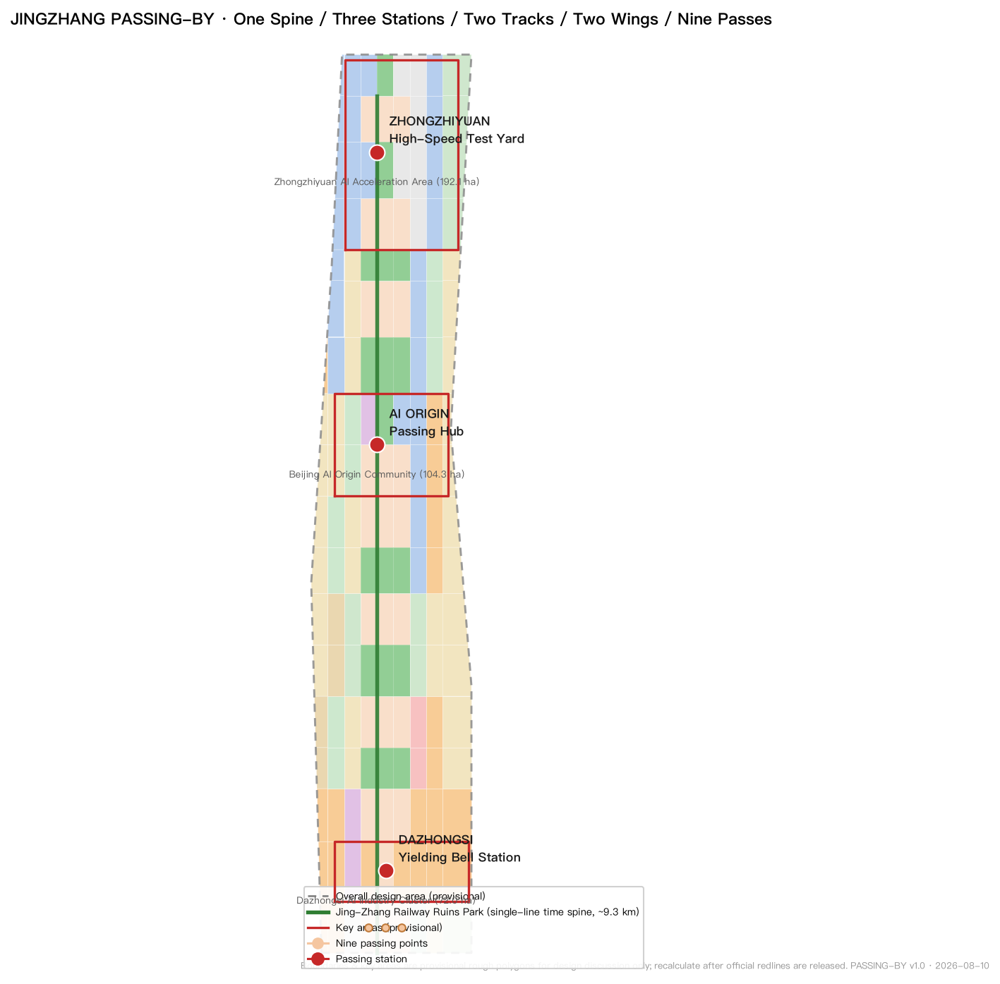
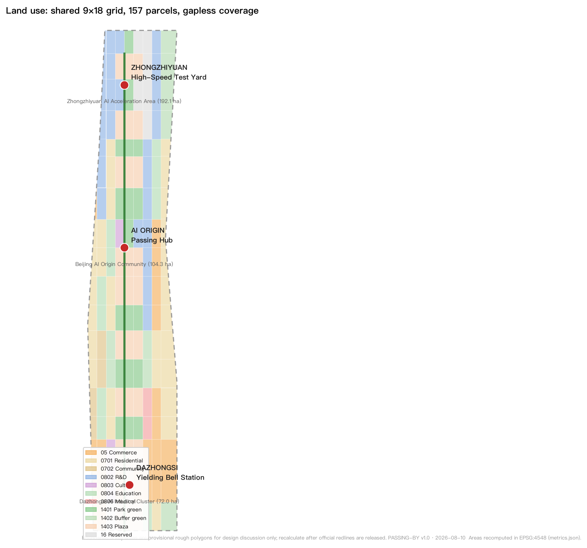
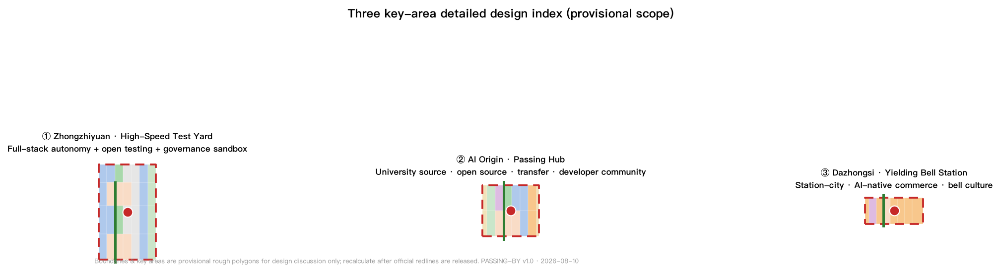
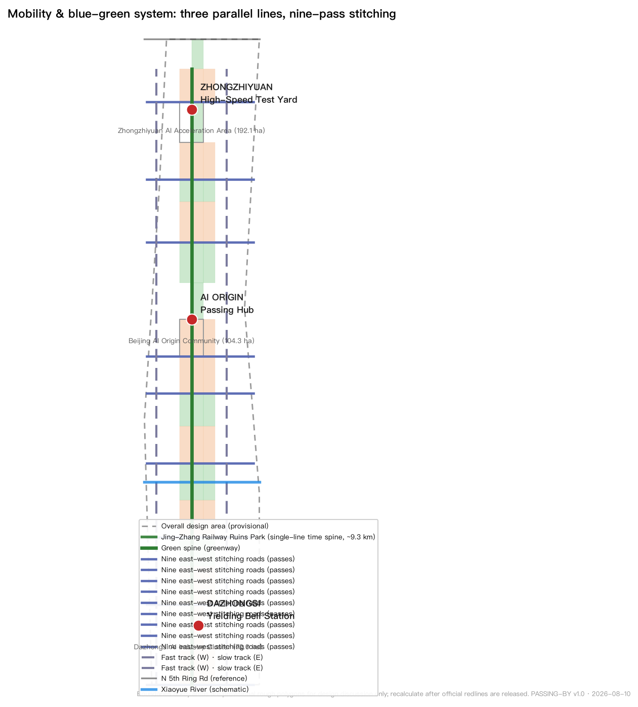
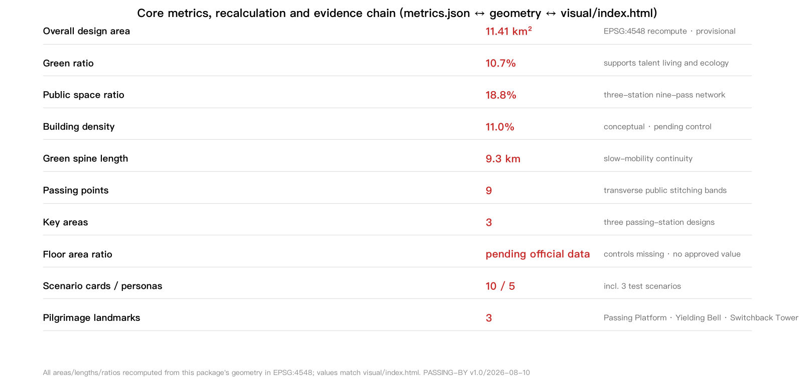

JINGZHANG PASSING-BY: The City of Yielding — Urban Design Proposal for the Centennial Jing-Zhang AI Innovation Belt
Drawing on the passing-and-yielding protocol of the single-track Jing-Zhang Railway (opened 1909), the proposal organises the AI Innovation Belt as 'JINGZHANG PASSING-BY / The City of Yielding': one heritage spine, three passing stations, two corridor tracks, two wings, and nine crossing points, where fast and slow innovation, human and machine right-of-way, and public AI ethics become one experienceable, testable, and operable urban line.
JINGZHANG PASSING-BY: The City of Yielding
A railway that taught Beijing's urban fabric how to yield in 1909 now teaches the AI age how humans and machines can share one city.
All spatial recommendations in this proposal are conceptual suggestions, reference schemes, or material for professional teams to deepen; they do not replace formal planning and are not government-approved conclusions 来源.
Design Basis and Source Inventory
This proposal is primarily based on the Pre-qualification Announcement for the International Urban Design Solicitation of the Centennial Jing-Zhang AI Innovation Belt (Haidian Branch, Beijing Municipal Commission of Planning and Natural Resources, 2026-05-09) 来源 标准, and follows the ten co-creation principles and six mandatory agent tasks of the Open-Call Task Book Extract for Global AI Agents 来源 标准. The design space starts from the provisional rough boundary and key-area polygons registered in brief/site-package/ 来源, and source-use boundaries follow data/source_registry.json 来源.
Source-use summary: five formal-ready sources (pre-qualification announcement, agent task book, Urban Design Administration Measures, Detailed Regulatory Planning compilation approval measures, national land-use classification guide) and one provisional-only source (the repository-maintained rough polygons for the three scope levels and three key areas). Provisional material is never used for official redlines, precise areas, or statutory control conclusions 来源.
Critical state of this submission: the site boundary and the three key areas are provisional constraints. They are usable only for proposal generation, self-checks, visualisation, and design discussion. The organizer's data gap does not block content scoring, but once official polygons are published, all area-sensitive layers and metrics in this package must be recalculated end-to-end 空间数据 指标. Precision limits and recalculation triggers are recorded in assumptions.json.

Proposal Overview: JINGZHANG PASSING-BY · The City of Yielding
Core Judgement
Opened in 1909, the Jing-Zhang Railway was China's first trunk railway designed and built by Chinese engineers. It ran as a single-track line, so trains had to meet and yield at stations — fast and slow, freight and passenger negotiating right-of-way on one track through station dispatch, signalling rules, and a plain public ethic: who yields, when, and where. The nine-kilometre ruins park this railway left across Haidian now crosses Zhongguancun, the university district, and today's AI industry belt — a natural specimen for the core question of the AI age: speed and co-existence.
Design judgement: translate "passing and yielding" from railway operating history into an urban right-of-way protocol for the AI age, making the belt a "City of Yielding". Fast and slow are not opposites but two kinds of trains that must negotiate; humans and machines are not master and servant but road users sharing right-of-way; AI capability is not unlimited acceleration but a learned boundary of yielding. Three site conditions make this judgement valid: the real history of single-track passing on the Jing-Zhang line; the speed transition of Zhongguancun "from coal to compute"; and the geographic coincidence of old stations — Dazhongsi, Qinghe, Qinghuayuan — with today's AI hubs 标准.
Naming and Logo Direction
- Primary name (Chinese): 会车京张 (Huìchē Jīngzhāng)
- Primary name (English): JINGZHANG PASSING-BY
- Subtitle: The City of Yielding / 让行之城
- Naming system: One Belt (Jing-Zhang) · Three Stations (passing stations) · Two Tracks (fast rail and slow rail) · Two Wings (Zhongguancun Technology Service Wing, Xiaoyue River Scenario Empowerment Wing) · Nine Passes (nine crossing points). The three key areas are named "Zhongzhiyuan · High-Speed Test Yard", "Origin Community · Passing Hub", and "Dazhongsi · Yielding Bell Station" 深度.
Logo direction: two crossing "yielding arcs" — a fast line (AI industry speed) and a slow line (everyday rhythm) meeting in a dot borrowed from railway signal language (green = go, yellow = caution, red = yield), with the arcs echoing the switchback alignment at Qinglongqiao and railway curve geometry. The mark can extend into station numbering, kilometre markers, wayfinding, and developer badge systems. Unlike abstract signal-only systems, this logo emphasises the negotiation act of right-of-way itself — who yields to whom 深度 深度.
Three Positionings and Five Functions
| Positioning | Passing-line translation | Spatial anchor |
|---|---|---|
| Centennial Jing-Zhang Culture Belt | the passing of memory: public display of the yielding ethic in railway civilisation | single-line time spine, old-station memory, Zhan Tianyou Passing Platform |
| Urban AI Living Experience Belt | the yielding of life: everyday human-machine shared streets | nine crossing points, passing plazas, slow green spine |
| AI Integrated Innovation Belt | the meeting of innovation: fast and slow industries negotiating growth on one track | dual corridor axes, three passing stations, two wings |
Five functions: AI full-stack self-reliant innovation (Zhongzhiyuan · High-Speed Test Yard); world-class AI innovation ecosystem (Origin Community · Passing Hub); a new AI+ scenario empowerment paradigm (Xiaoyue River Wing · test line); an intelligent, vital AI city (nine-pass yielding network and public space); and global voice in AI governance (the "Yielding Protocol" public ethic and the annual Passing Forum) 来源 深度.
Global AI Innovation Ecosystem Cases (5-8)
1. Silicon Valley + Stanford (US): the university-source/venture-capital/industry double helix — converted into an Origin Community continuum of universities, institutes, and incubators 来源. 2. Cambridge Science Park (UK): low-density research parks fused with a university town — converted into "building laboratories plus open test yards" at Zhongzhiyuan. 3. Tsukuba Science City (JP): a state-led industry-university-government-research system — a reference for "central-local co-building plus a listed factor guarantee mechanism". 4. one-north, Singapore: industry parks and public life in a work-live-play mixed district — converted into station-city integration and AI-native commerce at Dazhongsi. 5. Pangyo Techno Valley (KR): dense content-industry and founder communities — converted into "maker buildings plus developer community" operations. 6. Adlershof, Berlin (DE): a science city renewed on a former airport site — closest to Jing-Zhang's "brownfield renewal plus innovation infusion" path, converted into the progressive renewal method of the nine crossing points. 7. Nanshan, Shenzhen: a government-guided, market-driven innovation district — converted into "government-enterprise co-building plus open scenario lists". 8. Future Sci-Tech City, Hangzhou: talent- and scenario-centred industry-city integration — converted into talent housing, scenario roadshows, and public "Passing Day" operations.
The cases are not copied; only transferable mechanisms are extracted: a four-stage source-accelerate-live-govern loop, open scenario lists, developer-community operations, and public space that carries innovation exchange 来源 深度. Factor mechanisms for land, space, industry, capital, talent, compute, data, and scenarios are written as concepts for professional deepening, not as confirmed arrangements 来源.
Three-Level Scope Working Framework
Work is organised by the three scope levels defined in the announcement, with every mandatory task in announcement sections 1.3, 1.4, 1.5 and agent.1-agent.6 mapped in compliance_matrix.json 标准 深度.
| Level | Area (official announcement value) | Working objective | This proposal's answer | Data anchor |
|---|---|---|---|---|
| Coordinated research area | 43.6 km² | industry strategy and future urban form | three-areas-two-wings synergy loop, innovation chain, global case translation | 空间数据, 指标 |
| Overall design area | 11.4 km² | regulatory-depth renewal and urban character | one-spine/three-station/two-track/two-wing/nine-pass structure, land use and buildings | 空间数据, 空间数据 |
| Key detailed design area | 368.4 ha | detailed design of three districts | three mini-schemes: Test Yard / Passing Hub / Yielding Bell Station | 空间数据, 指标 |
All three scope boundaries are currently provisional rough polygons (rectangular approximations) inferred by repository maintainers from public text 来源. They are limited to: temporary proposal generation, human-readable visualisation, non-statutory design discussion, and local self-checks. They must not be used as official redlines, approval bases, precise area calculations, or statutory control conclusions. When official polygons are published, site_boundary, key_areas, land_use, buildings, roads, green_space, public_space, phasing, and all area metrics must be recalculated 空间数据 指标.

Coordinated Research Area: Industry and Future City
Spatial Structure: One Spine, Three Stations, Two Tracks, Two Wings, Nine Passes
The overall spatial structure is organised by the logic of "passing" 深度:
- One Spine: the "single-line time spine" of the Jing-Zhang ruins park (green ridge), approximately 9.27 km from south to north 指标 — the axis of memory, slow movement, and public experience 空间数据.
- Three Stations: three passing stations, i.e. the three key areas — Zhongzhiyuan (High-Speed Test Yard, north), Origin Community (Passing Hub, middle), Dazhongsi (Yielding Bell Station, south) 空间数据 空间数据 空间数据.
- Two Tracks: the fast track (west technology-service axis linking the Zhongzhiyuan-Origin-Dazhongsi innovation chain) and the slow track (east living-service axis linking housing, education, and community services), running parallel with the central green ridge 空间数据 空间数据.
- Two Wings: the Zhongguancun Technology Service Wing (west: capital, IP, international factor allocation) and the Xiaoyue River Scenario Empowerment Wing (central transverse: AI scenario testing and vital living) 来源.
- Nine Passes: nine east-west "passing points" cutting across the green ridge — each with an east-west stitching road and a passing plaza — resolving the century-old east-west severance caused by the railway 指标 空间数据 空间数据.
Industry Organisation and Factor Mechanisms
Zhongzhiyuan carries the AI full-stack self-reliant system: research space, open test yards, and reserved land for a chip-framework-model-application loop 空间数据; Origin Community carries the world-class ecosystem: university sourcing, open-source collaboration, incubation, and developer community 空间数据; Dazhongsi carries AI-native new business: station-city commerce, AI consumption experience, and the ancient-bell cultural activation 空间数据. Mechanisms for land, space, industry, capital, talent, compute, data, and scenarios are written as concepts pending professional deepening, not as confirmed arrangements 来源.
Overall Design Area: Urban Renewal at Regulatory Urban Design Depth
The overall design area is organised around the "single-line time spine" at regulatory urban-design research depth 深度 深度:
- Land use layout: the full area is partitioned by a shared 9×18 grid into 157 parcels covering the entire boundary without gaps or overlaps 空间数据. Research land (0802) ≈ 1.619 M m², commercial/services (05) ≈ 1.616 M m², residential (0701) ≈ 2.105 M m², park green (1401) ≈ 1.222 M m², plaza land (1403) ≈ 2.145 M m², reserved land (16) ≈ 0.508 M m² — all recomputable from the land-use layer 指标 指标 指标.
- Functional balance: innovation R&D plus commerce ≈ 28.4%, residential and community services ≈ 22.8%, green and open space ≈ 29.5%, reserved land ≈ 4.5% — industry, living, and public space stay broadly balanced 指标 指标.
- Renewal framework: a four-tier retain/renovate/demolish/new-build logic; because current buildings and ownership data are not provided, the tiers are methodological suggestions only 深度.
- Development intensity: statutory controls (FAR, height, density, green ratio, setbacks) are missing from public materials — all registered as missing in
planning_limits.json; this proposal gives no FAR or height conclusions; building scale is expressed as conceptual pending regulatory confirmation 指标 指标.
Key Area Detailed Design
All three key areas are provisional; the designs below are directional concepts requiring recalculation once official polygons and regulatory conditions arrive 空间数据 深度.
Zhongzhiyuan AI Autonomous Innovation Acceleration Area (192.1 ha, "High-Speed Test Yard", north)
- Positioning: carrier of the AI full-stack self-reliant system and global voice in AI governance 来源.
- Structure: central green ridge as axis; concentrated AI R&D parks to the west (research land), reserved open test land (16) to the east; a "High-Speed Test Yard" at the north end — a public test corridor for autonomous driving, robots, and low-altitude equipment 空间数据 空间数据.
- Buildings: building-laboratory plus shared-test-yard prototype; building density ≈ 11% as a conceptual value 指标.
- AI scenarios: full-stack validation, open testing, governance sandbox (scenario cards S1-S3).
- Implementation risk: test yard involves road and safety supervision; professional confirmation required.
Beijing AI Origin Community (104.3 ha, "Passing Hub", middle)
- Positioning: world-class AI innovation ecosystem and the "Passing Hub" — university sourcing, open-source collaboration, and incubation meet here 来源.
- Structure: the Origin Passing Plaza on the central green ridge as core; culture and education land (0803/0804) to the west; research and commercial services (0802/05) to the east; talent housing (0701) on the periphery 空间数据 空间数据.
- Buildings: around universities and institutes, a "results-transfer street plus developer community" prototype; retain-first, gradual renewal.
- AI scenarios: AI+education, AI+law, developer collaboration (cards S4-S7).
- Implementation risk: university ownership and campus boundaries not provided; adjacent renewal needs professional deepening.
Dazhongsi AI Industry Cluster (72.0 ha, "Yielding Bell Station", south)
- Positioning: AI-native new business and station-city commerce 来源.
- Structure: the "Yielding Bell Station" as core — translating the bell culture of the Dazhongsi Ancient Bell Museum into a daily "time-keeping and yielding" civic ritual; transit-oriented high-density commerce (05) and culture (0803) around the station, with residential and education on the periphery 空间数据 空间数据.
- Buildings: station-city integrated development combining commerce, culture, and interchange.
- AI scenarios: AI+commerce, AI+transit hub, ancient-bell digital guide (cards S8-S10).
- Implementation risk: station integration involves rail and engineering conditions; professional confirmation required.

AI Innovation Ecosystem, Talent Profiles, and AI+ Scenarios
User Personas (5)
| Persona | Profile | Core needs | Related scenarios |
|---|---|---|---|
| P1 Startup developers | 25-40, AI startups | compute, test space, funding, community | S1/S2/S5/S6 |
| P2 Academics and researchers | 20-35, universities/institutes | shared labs, results transfer, academic sociality | S4/S5/S7 |
| P3 Enterprise employees | 24-45, AI firms | commuting, dining, health, childcare | S8/S9/S12 |
| P4 Residents, elderly, children | all ages, existing communities | safe walking, parks, community services | S3/S10/S11 |
| P5 Visitors and international guests | 18-60, culture/AI tourism | cultural guiding, experiences, international exchange | S6/S9/S10/S13 |
AI Scenario Cards (10, including 3 industry test/validation scenarios)
S1 [Test] Zhongzhiyuan Open Test Yard: a low-speed public test corridor for autonomous driving, low-speed delivery, and robot patrol. Operating data anonymised; manual emergency stop and safety-officer system. Location: Zhongzhiyuan east reserved land 空间数据. Privacy: facial data in the test zone is de-identified statistics only; human review: safety officer plus operations centre double confirmation; operator: park operating company (concept).
S2 [Test] Human-Machine Yielding Intersection Protocol: pilot "passing traffic signals" at selected crossing points — hybrid intersections combining AI perception with a pedestrian-priority protocol, publishing yielding decision logs in real time. Location: ROAD-P01-P09 stitching roads 空间数据. Human review: revertible to conventional signals; no facial recognition deployed.
S3 [Test] Dazhongsi Smart Commerce Sandbox: a bounded sandbox in the commercial block where AI shopping guidance, cashierless payment, and delivery robots co-exist for 6-12 months, with operating data disclosed to the public. Location: Dazhongsi commercial parcels 空间数据.
S4 University-Institute-Incubator Continuum: a "results-transfer street" in Origin Community where university labs and incubators co-locate, with AI assisting patent applications and compliance review. Location: west education/research parcels of Origin Community 空间数据.
S5 Developer Passing Plaza: weekend open-source collaboration and roadshows at the Origin Passing Plaza, with AI matching mentors, funding, and test resources.
S6 Jing-Zhang Memory AI Guide: AR kilometre-marker guides along the single-line time spine, juxtaposing the 1909 passing scene with today's AI scene [scenario:ai-cultural-guide].
S7 AI+Education Classroom: community AI literacy classes with AI-assisted personalised learning, teachers present, and human-set examination review.
S8 AI+Health Service Navigation: health self-check and medical navigation for employees and the elderly, using only public health knowledge bases, never collecting personal medical records [scenario:ai-health-service-navigation].
S9 AI+Traffic and Walkability Assessment: walking-cycling flow sensing and safety assessment on the time spine, with data publicly queryable [scenario:ai-traffic-walkability].
S10 Passing-Point Community Living Room: resident self-governance platforms at the nine public spaces, with AI assisting minutes and demand aggregation; decisions rest with resident councils [scenario:enterprise-service-copilot].
S11 AI+Life Services: community canteens, elderly meal assistance, and last-mile robot delivery chains [scenario:robot-delivery-low-speed].
S12 Enterprise Service Copilot: policy matching, compute application, and recruiting assistant for park enterprises [scenario:enterprise-service-copilot].
S13 Public Activity Operation Review: crowd-flow and safety review for large events — AI advises, humans decide [scenario:public-safety-operations-review].
The full scenario-space-user-data-privacy-review-operator-risk mapping lives in compliance_matrix.json and visual/index.html; this narrative does not dump machine indexes 来源 深度.
Scenario Openness and Privacy Boundary
All scenarios obey four bottom lines: no individual surveillance, human review possible, revertible, and de-identified public data. Immature technologies are not described as fully deployable; test scenarios are not described as approved operations 来源. Privacy and human-review boundaries are recorded in compliance_matrix.json.
Land Use, Building Scale, and Retain/Renovate/Demolish
Land use is partitioned by the shared grid and covers the boundary completely 空间数据; main categories are reported in the overall-design section. Buildings are expressed as 101 conceptual footprints 指标, typed by research (0802), education (0804), culture (0803), medical (0806), commerce (05), residential (0701/0702), and reserved-incubation (16) 空间数据 空间数据.
Retain/renovate/demolish: because current buildings, ownership, and heritage protection scope are not provided, the proposal makes a principled suggestion of retain-first, gradual renewal, limited new build; any parcel-level demolition or renovation conclusion must be established by professional teams through site surveys and statutory procedures 深度. Building scale and heights are all pending regulatory confirmation; no approved values are given 指标.
Transport, Rail, Municipal Works, and Public Service Facilities
- Road micro-circulation: one central green-spine trail, west fast / east slow dual longitudinal roads, nine east-west stitching roads, and internal loops in the three key areas 空间数据 空间数据 空间数据; road area by conceptual class widths ≈ 1.216 M m² 指标.
- Rail and station integration: station-city integrated development at the three passing stations around existing rail stops (Qinghe, Qinghuayuan, Dazhongsi directions); rail alignments and engineering conditions await official data.
- Slow-mobility gaps: the nine stitching roads and the green ridge are organised with priority for continuous walking and cycling 指标.
- Municipal and new infrastructure: distributed energy, edge compute, smart light poles, and unmanned last-mile delivery are concepts; pipeline capacities and load calculations await municipal studies 深度.

Blue-Green Space, Public Space, and Urban Character
- Blue-green system: the single-line time spine (central green ridge) is the primary green corridor; the Xiaoyue River transverse ecological band is the secondary blue-green corridor; the nine passing-point public spaces are transverse infiltration bands; a blue-green node is proposed where the ridge meets the Xiaoyue River 空间数据 指标. Reference constraints for the heritage corridor, the existing rail alignment, water, and primary roads are in the constraints layer 空间数据.
- Public space: three passing plazas (Dazhongsi Yielding Bell Station, Origin Passing Hub, Zhongzhiyuan Passing Yard) plus nine crossing points form a "three-station nine-pass" public-space network 空间数据 指标.
- AI pilgrimage landmarks (3):
- Honour display system: "Passing Milestones" along the green ridge honour developers, enterprises, and community contributors, sharing a component language (seating, light poles, wayfinding, kilometre markers) 深度.
- Urban character: "railway + signal + blue-green" as the base language; building massing responds to the green ridge; character controls are concepts pending the official urban-design guideline.
1. Zhan Tianyou Passing Platform (north end of Origin Community): commemorates the 1909 single-track passing wisdom, with a "Yielding Protocol" public declaration wall and a passing chronicle gallery; 2. Dazhongsi Yielding Bell (Dazhongsi passing yard): translates ancient-bell time-keeping culture into a daily "yielding moment" civic ritual, with bell sound linked to AI traffic signals (concept); 3. Qinglongqiao Switchback Memory Tower (north end of Zhongzhiyuan): a viewpoint and honour-display tower inspired by the switchback alignment, hosting developer honours and open-source milestones.
Renewal Project List, Policies, and Phasing
12 renewal projects (concept list; see visual/index.html and compliance_matrix.json): ①Dazhongsi station-city renewal ②Yielding Bell public plaza ③Origin Passing Plaza ④results-transfer street ⑤Origin developer community ⑥Zhan Tianyou Passing Platform ⑦Zhongzhiyuan open test yard ⑧Zhongzhiyuan R&D park ⑨Qinglongqiao memory tower ⑩Xiaoyue River blue-green band ⑪nine-pass stitching roads ⑫community living-room network 指标 空间数据.
Phasing (matching geometry/phasing.geojson) 深度:
- Phase 1 (2026-2028, ≈ 2.251 M m²): activate Dazhongsi Yielding Bell Station and Origin Passing Hub; open the north-south slow-mobility gaps first 指标;
- Phase 2 (2028-2031, ≈ 4.013 M m²): weave the nine-pass stitching roads and the Xiaoyue River blue-green band; extend the community living-room network 指标;
- Phase 3 (2031-2035, ≈ 5.149 M m²): grow the Zhongzhiyuan full-stack park and the Qinglongqiao tower; the belt becomes a complete loop 指标.
Long-term operations (agent.6): an annual "Passing Day" (September, echoing the 1909 opening) and "Yielding Week"; a global "Yielding Protocol" AI ethics dialogue; a developer community motivated by "Passing Milestone" badges; scenario open operation in a test-display-promote three-stage sequence; international communication through the twin narratives of the "PASSING-BY" brand and the Jing-Zhang chronicle; a four-step conversion pathway of plaza roadshow → park entry → scenario openness → outcome launch for talent, enterprises, and developers. All activities and mechanisms are concepts, not confirmed government arrangements 来源.
Indicator System, Area Recalculation, and Compliance Matrix
Core indicators are recalculated from this package's geometry in EPSG:4548; formulas, sources, confidence, and assumptions are fully recorded in metrics.json and match the displayed values in visual/index.html 深度 指标.
| Indicator | Value | Unit | Design meaning |
|---|---|---|---|
| Overall design area | 11,412,825 (recomputed) / 11,400,000 (announcement) | m² | provisional boundary; recomputed value used for internal consistency |
| Green ratio | 10.7% | ratio | central green ridge as core; supports talent living and ecology |
| Public space ratio | 18.8% | ratio | three-station nine-pass network supports innovation exchange and public ethics |
| Building density | 11.0% | ratio | conceptual placement; pending regulatory control |
| Green spine length | 9,272 | m | slow-mobility continuity of the single-line time spine |
| Crossing points | 9 | count | transverse public bands stitching east and west |
| Key areas | 3 | count | passing-station detailed design objects |
| FAR | pending official data | ratio | regulatory conditions missing; no approved value given |
All announcement tasks 1.3 (3), 1.4 (3), 1.5 (9) and agent.1-agent.6 (6) are covered in compliance_matrix.json; the six mandatory professional standards are covered in standard_matrix.json; fifteen design-depth items are marked complete in design_depth_matrix.json 深度 深度.

Risk, Copyright, and Compliance
- Source legality: all evidence is public or user-provided cleared material; no non-public planning drawings, internal indicators, or personal privacy data are used 来源.
- Boundary precision: provisional boundaries must not be used as official redlines or precise areas; full recalculation is required after official polygons are released.
- Planning compliance: no statutory judgements are given on regulatory-plan adjustment, FAR, or building height; retain/renovate/demolish, road alignments, rail alignments, and municipal works are conceptual.
- Heritage and ecology: Jing-Zhang heritage scope, green-blue lines, and heritage control lines await official data; design near the heritage corridor is directional only.
- AI generation responsibility: this proposal is generated by an AI agent from public material with structured validation; final judgement rests with humans and professional teams 来源.
- Copyright and licensing: no unauthorised logos, fonts, images, or marks are used; the full statement is in
report/copyright_statement.md. - Pending data and professional review: official boundaries and key-area polygons, regulatory conditions, current buildings and ownership, heritage scope, rail and municipal data, and investment estimates are pending; see
assumptions.jsonandself_check.json深度.
References
1. Haidian Branch, Beijing Municipal Commission of Planning and Natural Resources: Pre-qualification Announcement for the International Urban Design Solicitation of the Centennial Jing-Zhang AI Innovation Belt (2026-05-09) 标准. 2. Open-Call Task Book Extract for Global AI Agents on the Centennial Jing-Zhang AI Innovation Belt (user-provided cleared document, 2026-05-18) 标准. 3. Ministry of Housing and Urban-Rural Development: Urban Design Administration Measures (2023). 4. Ministry of Housing and Urban-Rural Development: Compilation and Approval Measures for Detailed Regulatory Plans of Cities and Towns. 5. Ministry of Natural Resources: National Guide to Land-Use and Sea-Use Classification for Survey, Planning, and Use Control (2023-11). 6. Repository maintainers: Provisional rough polygons for the three scope levels and three key areas of the Centennial Jing-Zhang AI Innovation Belt (provisional) 来源. 7. Public materials of Haidian District People's Government (background reference). 8. Public historical materials on the Jing-Zhang Railway (1905-1909 construction history, single-track operation, and the Qinglongqiao switchback; background reference).